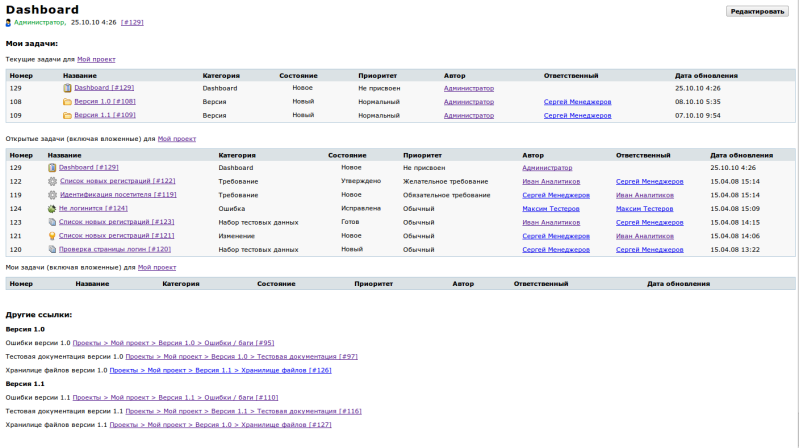

|
<< Click to Display Table of Contents >> Navigation: Rus > Руководство разработчика > Как писать скрипты и триггеры в TrackStudio > Как сделать свой Dashboard |
Начиная с версии 4.0.7 в TrackStudio есть возможность делать dashboard для проектов и задач. По сути, Dashboard - это представление задачи в виде Документа, плюс набор макросов.
Классы, реализующие макросы, сделаны подключаемыми. Список действующих макросов должен быть указан в свойстве adapter.macros в файле trackstudio.adapter.properties
adapter.macros com.trackstudio.app.adapter.macros.CutMSWordTags; com.trackstudio.app.adapter.macros.ConvertURL; com.trackstudio.app.adapter.macros.Username; com.trackstudio.app.adapter.macros.SimpleNameLink; com.trackstudio.app.adapter.macros.FullPathLink; com.trackstudio.app.adapter.macros.SubtaskFilter; com.trackstudio.app.adapter.macros.ChartFactory;
com.trackstudio.app.adapter.macros.UDFViewMacro; com.trackstudio.app.adapter.macros.ExternalTaskLink
В этом списке:
CutMSWordTags
Вырезает из вставленного в описание задачи текста теги редактора MS Word
ConvertURL
Преобразует текст вида http://www.trackstudio.com в ссылку
Username
Преобразует строку вида @login в ссылку на профиль указанного пользователя
SimpleNameLink
Преобразует текст вида ##43434 в ссылку на задачу с указанным номером, номер заменяется на название задачи
FullPathLink
Преобразует текст вида #43434 в ссылку на задачу с указанным номером, номер заменяется на полный путь до задачи
SubtaskFilter
Выводит таблицу с задачами, отфильтрованными указанным фильтром
#number{filter:название фильтра} - таблица по фильтру.
#number{filter:название фильтра|num:20} - таблица по фильтру, количество строк 20.
ChartFactory
Выводит на панель различные графики
UDFViewMacro
Выводит список дополнительных полей задач. #124{udf:Имя дополнительного поля}
ExternalTaskLink
Макрос делает ссылку на задачу в новом окне. Формат макроса #[site]333
где site - название сайта, к которому нужно делать ссылку. Названия сайтов нужно указывать в файле trackstudio.default.properties
trackstudio.external.site http://localhost:8888/TrackStudio
trackstudio.external.nextsite http://host.trackstudio.com/TrackStudio
GraphViz
Макрос строит графическую схему операций для процесса. Формат макроса GraphViz{4028808a194731fd0119476e1efe0003:500x500:gv|circo}
где 4028808a194731fd0119476e1efe0003 - id процесса для которого нужно построить схему.
Вы можете создать свой макрос на языке Java. Для этого напишите класс, реализующий интерфейсcom.trackstudio.app.adapter.MacrosTaskAdapter
public String convert(SessionContext sc, String url, String description, boolean audit, boolean viewText, boolean showChecked) throws GranException;
Класс этот нужно откомпилировать и подложить в папку webapps/TrackStudio/WEB-INF/classes вашего экземпляра TrackStudio с сохранением структуры папок, соответствующих package класса.
Мои задачи:
Текущие задачи для ##26
#26{filter:Все задачи}
Открытые задачи (включая вложенные) для ##26
#26{filter:Открытые задачи (включая вложенные)}
Мои задачи (включая вложенные) для ##26
#26{filter:Мои задачи (включая вложенные)}
Другие ссылки:
Версия 1.0
Ошибки версии 1.0 #95
Тестовая документация версии 1.0 #97
Хранилице файлов версии 1.0 #126
Версия 1.1
Ошибки версии 1.1 #110
Тестовая документация версии 1.1 #116
Хранилице файлов версии 1.1 #127
Будет отображаться вот так
